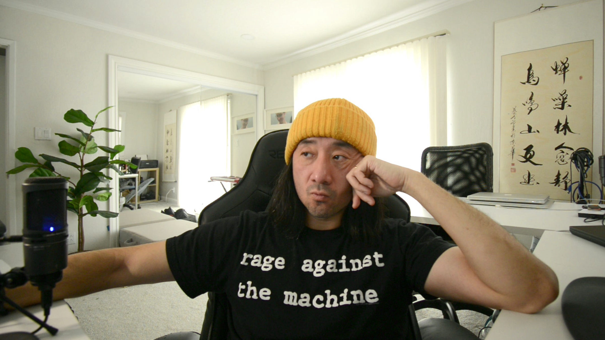
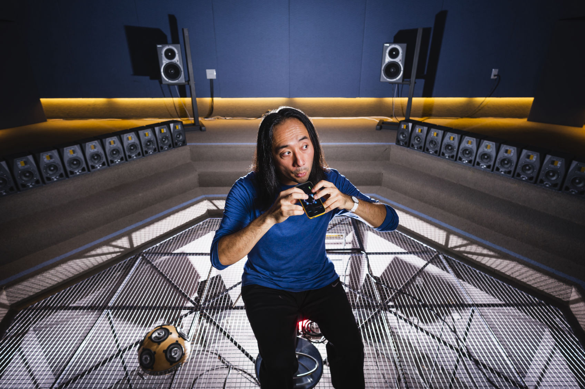
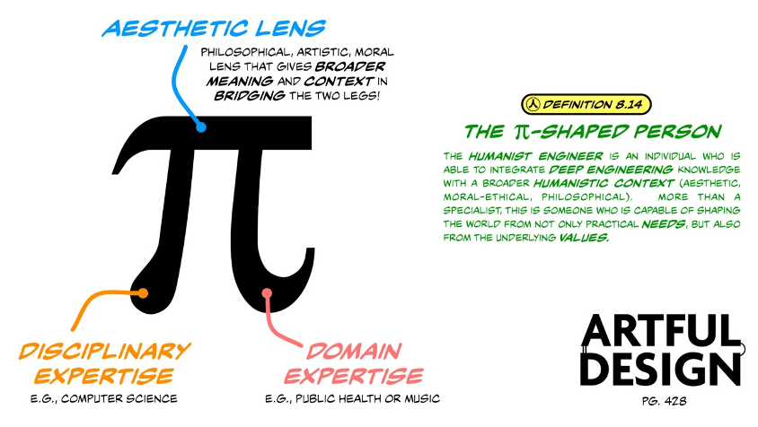
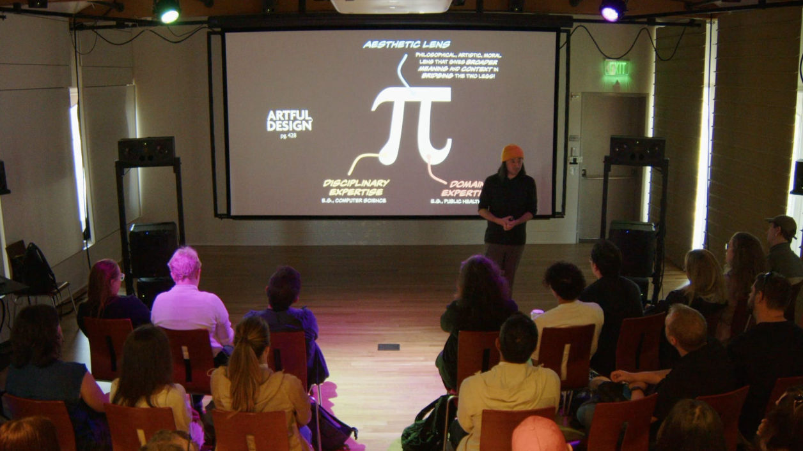
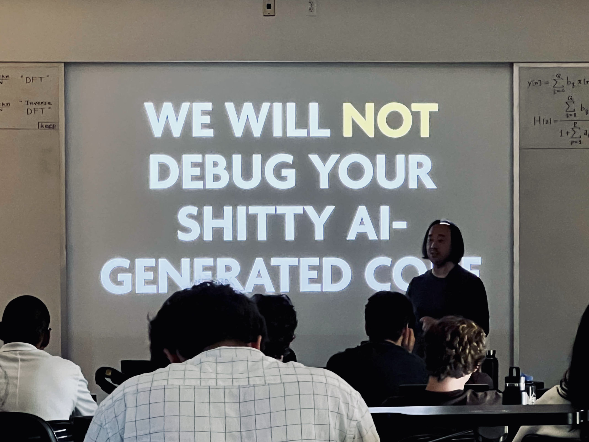
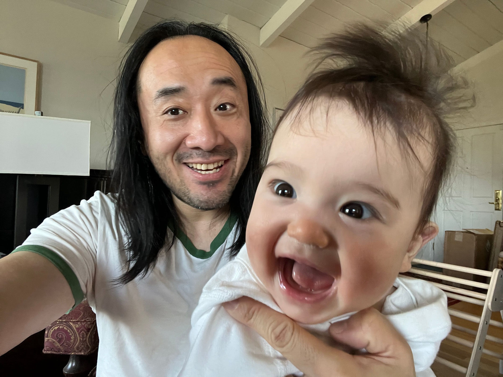

I am a strange one. An Associate Professor at Stanford University's Center for Computer Research in Music and Acoustics (CCRMA), I am based in the Music Department, even though all my degrees are in Computer Science (a B.S. from Duke University and a Ph.D. from Princeton University). While I publish papers, I primarily engage in forms of practice-based research, where the created artifacts themselves often serve as the primary vehicles of scholarship. I design programming languages, direct laptop and VR orchestras, author comic books, create digital ocarinas, and more. This is an story of what I do —and why.

The Wheels Keeps Turning
I tell my students that once upon time I applied to Stanford as an undergrad — and was rejected —and later to Stanford as a grad student — and was rejected again. In 2007, when applying for jobs, I asked my Ph.D. advisor at Princeton, "Perry, I have been rejected twice by Stanford as a student, should I even bother applying there for a faculty position?" Perry simply said, "the system has no memory."
I like to tell my students this factoid, if only to remind them that the wheel keeps turning. You go up; you go down. But you don't forget who you really are. Don't let setbacks keep you down. Don't be too proud when you manage to achieve something. I attribute this measured outlook to Nainai—my paternal grandmother—who raised me in China and who lived to be 103, and who had always advocated humility ("As a teacher, your job is not to be better than your students, but to help your student to eventually exceed you"). At the same time, well into my adulthood, Nainai always offered tools to process setbacks. "If it does not go well, it will be okay." She might say before an important milestone. "You don't need to untie every knot," when she sensed I am dealing with heartache and searching for unavailable closures. Pro-tips from a grandmother whose long and tumultuous life had fostered her own brand of stoicism. Overall, I think the message was this:
You cannot control most of what happens to you; don't give up and do not lose hope.
It has been a helpful message to keep on hand. I started on the tenure track at Stanford in 2007. I was denied tenure in 2014 (for anyone keeping count, that was my third Stanford rejection). At the time, it felt like utter professional failure and, by extension, personal failure. In the months that followed, I recentered myself and embarked on a "tenure adventure" where I talked to everyone from department chairs to deans to the Provost, while I simultaneously contemplated alternate career paths. I appealed my tenure decision and made an argument for academics like myself who produce research in unconventional ways (I create tools perhaps more than I write peer-reviewed journal articles). Inwardly, I contemplated whether getting tenure at Stanford ought to define a person. (It ought not, I decided.) I started writing a photocomic book about why we design, which gave me a renewed sense of purpose. My family was unfailingly supportive, from my parents' choice words for Stanford's "inability to value what I do" to Nainai's gentle reminders to prioritize health over achievement. This all contributed to my feeling rather "zen", to the point I felt perfectly okay regardless of the outcome of my appeal. In another twist of fate, however, Stanford University reversed the decision and granted me tenure in 2016, thanks to my colleagues and to the people in the administration being open-minded to the prospect of strange professors and unconventional scholarship. The wheel keeps turning.
A decade later, the wheel is still in spin, as we head into profoundly uncertain future. I am tired. Tired from worrying about the world; worrying about America (the country that afforded me growth and my career); worrying about China (the country of my origin). Tired of uncritical nerds with technology. Weary and wary of people promising that artificial intelligence will "10x ourselves" while never stopping to ask whether sheer efficiency is what we truly desire. Tired of hype and hypers. Tired of vicious cycles and how hard they are to break. I am tired of feeling tired.

Ocarina for your smartphone: hold the phone as you might a sandwich; blow into the microphone to sound the instrument; multitouch controls pitch; tilting the device controls vibrato. The joke here is that it actually works. There is also a globe in the app where you can listen in on other people blowing their phones around the world. Nobody quite asked for this.
Artful Design
Fortunately, I am not tired of my job. I love being a professor. I revel in being a "strange engineer"; I build tools that no one quite asked for, that don't quite solve any problems that seem to exist, like an Ocarina for your mobile phone. ChucK, a programming language for computer music, is entering it's third decade of development and experiencing something of a "renaissance". A laptop orchestra. A VR orchestra. Each has its whimsical acronym. SLOrk. SVOrk. The book project I started writing in 2015 ended up being Artful Design: Technology in Search of the Sublime. It was supported by a Guggenheim Fellowship and was published by Stanford University Press in 2018. Artful Design advocates that we should make tools as we would make art, and argues for a kind of values-based design that was never after efficiency or competitiveness, but undergoes a search for the playful, the beautiful, the humanistic. Writing this book revitalized me; for it expressed a long-standing core belief I have carried: that aesthetics matter profoundly in the creation of tools. At its core, artful design argues that, in a world of increasing technology and unyielding human discord, we ought to build tools that reflect the world we would want to live in and the kind of people we would want to be. This underlying ethos is spelled out as the first and last five words of my book: what we make, makes us.
While its ideas continues to evolve, artful design has been an overarching ethos for the work my students and I have do in my Music, Computing, Design (MCD) group at CCRMA: the ChucK music programming language, audiovisual design, instrument design, laptop orchestra, VR design, and more (these will be discussed in turn in my Portfolio). I wrote Artful Design as a "hidden ethics education" book for engineers. It advocate for a notion of a Pi-Shaped Person, which combines two legs in "disciplinary" and "domain" expertises while critically advocating for an "aesthetic lens" —the philosophical, artistic, moral lens that gives broader meaning and context in bridging one's disciplinary and domain expertise. The Pi-Shaped Person represents the view that all tool-building ought to proceed from a critical and fundamentally humanistic mindset (basically the inverse of how technology is built and deployed and taught today).

...the "Pi-shaped" person from Artful Design. The "aesthetic lens" is why engineering, art, the humanities, and social sciences matter profoundly to one another.

an educational blueprint for engineers...
The Spark of Rebellion (and Curiosity)
I have always gone about things a bit differently—as a professor, academic, engineer, and artist. To say I am a "strange one" is to admit I am something of a contrarian. And yet I do not relish being a contrarian. I just am. The truth is, I feel guilty about being different. I don't like going against the flow, but there are times when a voice in me says, "stand your ground." I do so, even as I wonder, "is that even a good idea?" (I often won't know the answer until much later, if at all.) I recall two words Nainai inscribed inside the cover of a math textbook she gifted me in middle school, "多思" ("Think More"), which I have always understood as "think for yourself."
Question as I do about nearly everything, my work has been about kindling a spark—of rebellion and curiosity—in ourselves, because I have come to see that such a spark must never go out. I love teaching, most likely instilled by three previous generations of teachers in my family. In my courses, I teach ideas, skills, techniques, craft, as might be expected, but above all I try to help students (and myself) build tools of understanding and that foster curiosity about the world. It has taken me years to realize that my feeling of doubt and guilt of doing things differently may have been that spark all along.
To me, the spark of rebellion means having the tools to think for yourself, especially when the world insists you go another way. For example, to keep working on a "traditional" computer music programming language that promotes creative coding—in an era of generative AI where humans are encouraged to write less and less code for themselves—may well be an act of rebellion (related: see Figure below).

From the opening lecture of my "Music, Computing, Design" course in Fall 2025.
In an age of convenience capitalism, to stand one's ground and insist that we critically examine ourselves as engineers and designers vis a vis the technology we shape can be an act of rebellion. Such acts, however, come with the aforementioned price of feeling like someone does not belong. Nonetheless, I feel the need to resist and to say, "we have to slow down and think about things critically, and to never take the premises for granted". For example, we build technology to reduce the cost of labor and increase productivity. But is efficiency and productivity the ultimate goal of technology? Are they automatically and always desirable? What about activities — like creative expression and education—where the labor and process are often indivisible from the meaning of the work? What if the whole point of music, of art is that we actually make it? What if the confusion and frustration is crucial to how we learn? What if all things worthwhile are mountains to climb?
I pose these questions in my courses and in my talk titled "What Do We (Really) Want from AI?", which I have delivered a hundred times to audiences range from tech executives to auditoriums of high school students and their teachers and parents. In it, I highlight a key difference:
Intelligence: possessing the means to achieve your desires. (Do you have the tools to get what you want?)
Wisdom: possessing the capacity to critically evaluate your desires in the first place, and to evaluate the means you would use to achieve them. (Is what you want "good" to begin with — and for whom?)
Intelligence is extrinsic and may be aided by technology; wisdom is intrinsic and almost by definition cannot be delegated to another outside ourselves, whether another person or a technology. We must learn to think for ourselves.
The Road Ahead
I look at my daughter, who toddles and is learning about a world where everything is new to her, and I wonder about her future, and what I could possibly teach her. I cannot design her, nor would I, but I can design some of her contexts. Like my grandparents and parents labored to do for me, I earnestly want to offer my daughter two kinds of tools: tools for happiness (to flourish) and tools for wisdom (to think for herself). Within the so-called spark of rebellion may be the seed of both. And that is what I want for my students and indeed for myself.

What kind of a world will my daughter grow up in? I do not know, except that it will be a world that I can barely imagine.
I cannot see the road ahead, but I do know this: our best work is never done in a vacuum, but in a community, and with a willingness and urgency to question both the world and ourselves. In this sense, CCRMA — the computer music center where I teach, do research, and hold office hours —is itself something of a rebel alliance, an anachronism that probably shouldn't exist in this time and place (Stanford, Silicon Valley, America in 2026) that values efficiency-above-all, and where education is too often seen as nothing more than a means to wealth and power. CCRMA is one of the few places remaining at Stanford where technology and humanism can be explored deeply as a unity. It is a sanctuary that I will keep fighting to preserve. For within this sanctuary, our work continues. Since publishing Artful Design, resurrecting ChucK development, creating a VR Design Lab, advocating for a Pi-Shaped education, joining Stanford Human-centered AI Institute (HAI) as something of a contrarian, I have been writing another comic book about the life of my grandmother who raised me in Beijing and who lived to be 103, and me as an extension of her —an immigrant Chinese-American computer music professor. No, Stanford has not asked me to write a comic book about my grandmother; nor my family. Here is yet another thing that nobody asked for. I don't even know what the book has to do with music; I only know that I am impelled to write it—a kind of "hidden design" book, a strange follow-up to Artful Design about how to shape our lives in profoundly uncertain times. And how I have learned from my family that daring to live authentically in troubled times is an act of rebellion.
I try to take nothing for granted while questioning everything—starting with myself. The world tells us simultaneously to "stay in your lane" and to "think outside the box." Do we have the wisdom to figure out for ourselves which, in a given situation, is the better course: when to respectfully stay within the prescribed bounds—and when to artfully overstep them? At the end of the day, the so-called "spark of rebellion" is not about breaking away from the world, but to be a part of it, to love the parts that deserves care, to stand in resistance when necessary.
I thank you for your time and energy in conducting this review.
Sincerely,
Ge Wang